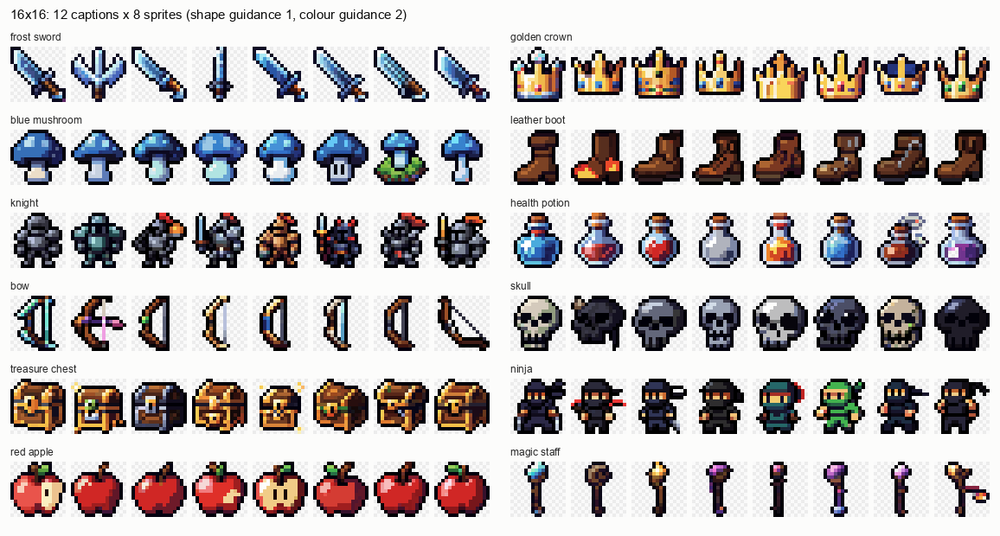

Type a caption and a small transformer (39M parameters) draws pixel-art sprites one pixel at a time. It runs in your browser: nothing is sent to a server.

Sprites appear here as the model draws them, pixel by pixel, row by row. New runs go on top.